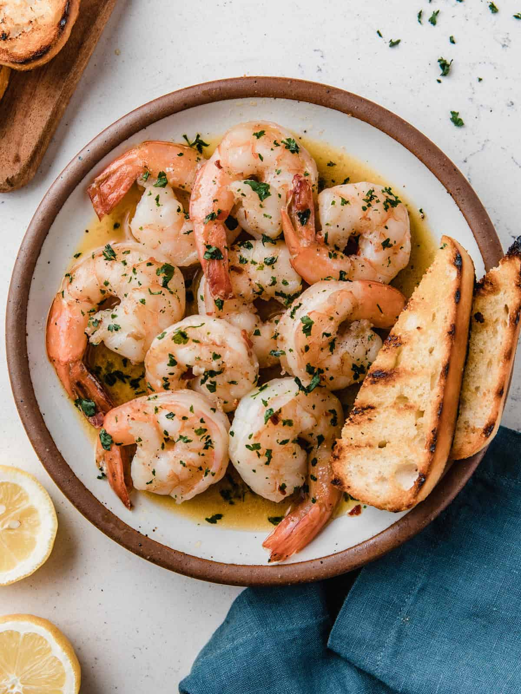

Shrimp Scampi
Home

Description
Shrimp scampi is a beloved Italian-American dish that perfectly
marries the delicate sweetness of shrimp with the bold
flavors of
garlic, white wine, and butter. This elegant yet simple preparation
transforms humble ingredients into a
restaurant-quality meal that
can be prepared in under 20 minutes. The dish gets its name from the
Italian word "scampo,"
which refers to a type of lobster, though the
American version has evolved to feature shrimp as the star.
Traditionally served
over pasta or with crusty bread, shrimp scampi
offers a perfect balance of richness from the butter, brightness
from lemon
juice, and aromatic depth from fresh garlic and herbs.
Ingredients
- 1 pound large shrimp, peeled and deveined
- 1/4 cup olive oil
- 4 tablespoons butter
- 6 cloves garlic, minced
- 1/2 cup dry white wine
- 2 tablespoons fresh lemon juice
- 1/4 teaspoon red pepper flakes
- 1/4 cup fresh parsley, chopped
- Salt and black pepper to taste
- 12 oz linguine or angel hair pasta
- 1/4 cup grated parmesan cheese
Instructions
- Prepare the pasta water - Fill a large pot with salted water and bring to a boil for cooking the pasta.
- Clean the shrimp - Pat shrimp dry with paper towels and season with salt and pepper on both sides.
- Cook the pasta - Add pasta to boiling water and cook according to package directions until al dente.
- Heat the pan - In a large skillet, heat olive oil over medium-high heat until shimmering.
- Sear the shrimp - Add shrimp to the hot pan and cook for 1-2 minutes per side until pink and cooked through, then remove to a plate.
- Sauté the garlic - In the same pan, add 2 tablespoons butter and minced garlic, cooking for 30 seconds until fragrant.
- Deglaze with wine - Pour in white wine and red pepper flakes, scraping up any browned bits from the bottom of the pan.
- Create the sauce - Let wine reduce by half, then stir in lemon juice and remaining butter until melted and smooth.
- Combine everything - Return shrimp to the pan, add drained pasta and fresh parsley, tossing everything together.
- Serve immediately - Transfer to serving plates, sprinkle with Parmesan cheese, and serve with lemon wedges and crusty bread.